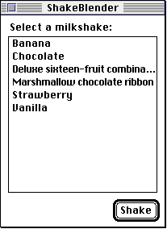
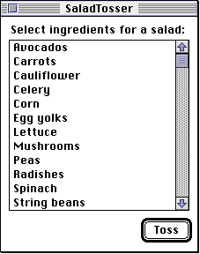
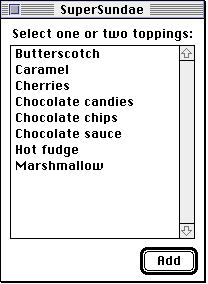
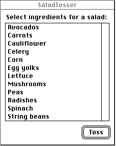
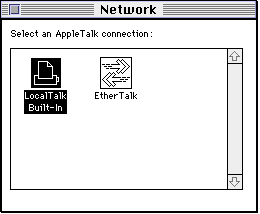
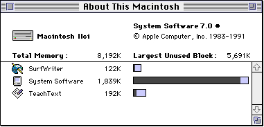

Legacy Document
Important: The information in this document is obsolete and should not be used for new development.
Important: The information in this document is obsolete and should not be used for new development.


Appearance of Lists
A list is a series of items displayed within a rectangle. Each item in a list is contained within an invisible rectangular cell. All cells in a list created by the List Manager are the same size, but cells may contain different types of data. Your application may allow the user to select one or more items in a list by clicking them. When a user selects an item, the List Manager highlights the cell containing the item.Figure 4-1 illustrates a window that includes a list of six items.
Figure 4-1 A one-column, text-only list without a scroll bar
 The font used for a text-only list is determined by the font of the current graphics port. Usually, you should create lists in the system font. Regardless of the font your application uses, if a string is too long to fit in a list using the current font, the List Manager uses condensed type in an effort to fit it. If the string is still too long, the
List Manager truncates the string displayed and appends an ellipsis to it. Both of these techniques are illustrated in Figure 4-1. Both the strings "Deluxe sixteen-fruit combination" and "Marshmallow chocolate ribbon" are condensed; the first of these is also truncated.Lists may contain a vertical scroll bar, a horizontal scroll bar, or both. By using scroll bars, you can include more items in a list than can fit in the list's rectangle, and the user can scroll to view multiple items. If there is any chance that a list may contain more cells than can fit within the list's rectangle, you should include a scroll bar in the list.
Figure 4-2 illustrates a list that includes a vertical scroll bar.Figure 4-2 A one-column, text-only list with a vertical scroll bar
 If a list includes a scroll bar but there are a small enough number of items in the list that all the list's items are visible, the List Manager automatically disables the scroll bar. For example, Figure 4-3 shows such a list.
Figure 4-3 A list whose scroll bar has been disabled
 When a window containing one or more lists becomes deactivated, your application should call the List Manager to deactivate the lists as well. Figure 4-4 shows a deactivated list.
 Your application can create one-column lists of the type illustrated in Figure 4-2 through Figure 4-4 using the List Manager. Your application can also create lists that contain two or more columns. For example, the Network control panel allows the user to select
a network connection from a three-column list. In Figure 4-5, there are only two possible network connections, so there are no items in the third column of the list.Figure 4-5 A list containing multiple columns and graphical elements
 Note that the list in Figure 4-5 contains graphical elements rather than just text. To create a list with graphical elements, you must write a custom list definition procedure, because the default list definition procedure supports only the display of text. A list definition procedure is a code resource of type
'LDEF'that defines the characteristics of a list. In addition to using a list definition procedure to support graphical items in lists, you can write one to customize the display of text in a list. For example, to use styled text in a list, you would need to create a list definition procedure.You can also use a list definition procedure to create lists that contain cells which display more than one type of information. For example, the Finder's "About This Macintosh" modeless dialog box contains a list of applications that are currently in use. Each cell in the list includes a small icon of the application, the name of the application, the amount of memory in the application's partition, and a graphical indication of how much of that memory has been used, as illustrated in Figure 4-6.
Figure 4-6 A list of items whose cells display more than one type of information
 Note that the list in Figure 4-6 is not a multicolumn list. It is a one-column list, but each cell of the list displays several types of information.
Your application specifies whether the List Manager should leave room for a size box, although your application is responsible for drawing any grow icon; the List Manager does not draw the grow icon automatically. Usually, size boxes are useful only for lists that are on the bottom of the windows that contain them, like the list in Figure 4-6. In this case, resizing the window changes the size of the list. Your application should ensure that the user cannot shrink the size of the window so much that the list is no longer visible.
In addition to requesting a vertical scroll bar, your application may request that the List Manager use a horizontal scroll bar for your list. A second scroll bar is useful mainly if your application allows the user to resize a window containing a list both horizontally and vertically so that only a portion of the list is visible. A second scroll bar is also useful to allow the user to scroll through a table of cells. Usually, however, if you are implementing a spreadsheet-like application, you should not be using the List Manager. Most multicolumn lists created by the List Manager, such as the one illustrated in
Figure 4-5, should not include two scroll bars.